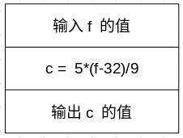
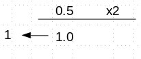
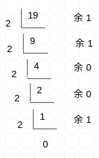
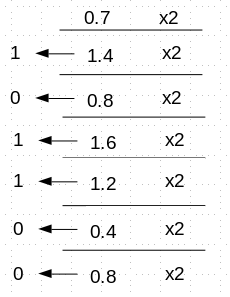
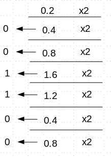

第三章
最简单的C程序设计
顺序程序设计
3.1 顺序程序设计举例
例3.1 将华氏温度转换为摄氏温度。
【解题思路】：根据公式，若\(f\)是华氏温度，\(c\)是摄氏温度，则有\( c = \frac{5}{9} (f-32) \)

#include<stdio.h>
int main(void)
{
double f,c;
printf("input Fahrenheit:");
scanf("%lf", &f);
c = (5.0/9.0)*(f-32.0);
printf("The Centigrade is: %f\n", c);
return 0;
}
3.2 数据的表现形式及其运算
3.2.1 常量和变量
[1]常量：程序运行中，其值不能被改变的量称为常量。
常量的类型
- 整型常量，如
10，010(八进制，相当于十进制的8)，0x10（十六进制，相当于十进制的16）, -34等;
- 实型常量，如
123.46， 0.345, -3., -.123, 4e5（相当于\(4 \times 10^5\)), -.4e-5(相当于\(-0.4 \times 10^{-5} \))等，注意后两个是指数形式，C语言中指数不能取小数；
- 字符常量，C语言中用
'符号包括起来的符号，如'A', 'b', '#', '_', '\n', '\\'等，后面两种是转义符号，参见课本P40，表3.1，C语言在程序文件中其实并没有保存符号，而是这个字符在字符表中的序号，这个序号称为字符码，有很多种字符码，最常见的是ASCII码，参见课本附录B；
3.2.1 常量和变量
[1]常量：程序运行中，其值不能被改变的量称为常量。
常量的类型
- 字符串常量，C语言中用
"符号包含起来的内容称为字符串，如"abc", "123"等，注意"123"和123是不同的；
- 符号常量，C语言用
#define定义的符号名称称为符号常量，如#define PI 3.14159, #define FALSE 0等，使用符号常量而不是直接用常量字面量的好处是：
3.2.1 常量和变量
[2]变量：程序运行中，操作系统分配的具有特定属性，用来存放数据的一块内存单元，为了方便进行管理和使用，给这块内存一个名字，称为变量。
变量的特性：
- 在程序运行期间，变量的内容是可以改变的；
- 变量必须先定义再使用；
- 变量是有类型的；
#include<stdio.h>
int main()
{
int a = 10;
printf("The value of a is %d\n",a);
//The value of a is 10
printf("The address of a is %p\n", &a);
//The address of a is 0x7ffc146ce2c8
return 0;
}
3.2.1 常量和变量
[3]常变量（C99）：程序运行中，定义一个变量，其值在整个运行期间不变，称为常变量。
const double pi = 3.14159 ;
#define PI 3.14159
常变量和符号常量的区别：
- 符号常量用
#define定义，是预处理指令，在编译前完成替换，运行时没有分配内存，因此无法在调试时获得其值；
- 符号常量具有全局作用域，有可能被其他的包含文件污染；
- 综合以上，建议在新的编译器中优先使用常变量来替换符号常量；
3.2.1 常量和变量
[4]标识符：用来对变量、符号常量、函数、数组、类型等命名的有效字符序列，称为标识符（identifier)。
- 只能由字母（
a-z, A-Z)、数字(0-9)、下划线(_)组成，第一个字符不能是数字，不能是关键字，合法的命名如如sum, average, _total, _123, Class, student_name,
非法的例如
int(关键字），#33（非法字符#），1st（不能是数字开头）等；
- 尽量起有意义的名称，用单词组或拼音词组来起名，中间用下划线
_来分开；
- 变量名、函数名用全小写的字母，符号常量和类型名用全大写的字母；
- 大小写是不同的，
class和Class是两个不同的标识符;
3.2.2 数据类型
关于计算机编程语言中的类型：
- 数学中不考虑存储的限制，比如整数就是无限大的，但计算机中必须考虑是否在内存单元中可以放得下；
- 数学中的计算是可以很精确的，比如\( \frac{1}{3} \)，但是计算机中只能存储近似的值，比如
printf("%f",1.0/3.0)； 会显示0.333333，只有6位小数精度，这是float的限制，为了更高的精度，可以用double，但不能无限的精度；
- 计算机编程中的类型，其实大部分是对数据在内存中存储的安排，包括长度（占多少字节），数据保存的方式的等；
3.2.2 数据类型
C语言中的类型：
- 基本类型：
- 整数类型
- 基本整数类型(int)
- 短整数类型(short int)
- 长整数类型(long int)
- 双长整数类型（c99）(long long int)
- 字符型(char)
- 布尔型（c99）(bool)
3.2.2 数据类型
C语言中的类型：
- 基本类型：
- 浮点类型
- 单精度（float)
- 双精度（double)
- 复数类型
- float_complex
- double_complex
- long double_complex
3.2.2 数据类型
C语言中的类型：
- 枚举类型（enum)
- 空类型(void)
- 派生类型
- 指针类型(*)
- 数组类型([])
- 结构体类型(struct)
- 共用体类型(union)
- 函数类型
3.2.3 整型数据
3.2.3.1.整型数据的分类
[1].基本整型(int)
int具体有多少字节由编译系统来定，一般16bit（位）的系统int是16bit, 相当于2byte(字节），比如DOS系统下的Turbo C之类的编译器，以及16bit的单片机系统，而32bit的系统一般int是32bit，相当于4byte，比如visual C++ 6.0- 可以用
sizeof(int)来计算具体环境的一个int变量占多少字节数
- 计算机的内部存储器的一个存储单元是8bit, 相当于1个byte(一个字节)，1K（千） = 1024 (\( 2^{10} \)bytes)，1M（兆）= 1024K (\( 2^{20}\)bytes), 1G(吉）=1024M(\( 2^{30}\)bytes)
- 现在的电脑一般至少2G的内存，也就是内部有\(2\times 2^{30} \)个内存单元（每个单元1字节），这些内存单元为了方便访问，都已经进行了编号，称之为地址(address)
[1].基本整型(int)
- 在计算机的存储中，一个存储器中的bit(位)保存一个二进制数的一位，如果只有一个bit，能表示的范围就是
0([0]2)~1([1]2)
- 一个存储器单元是8bit，能表示的范围就是
0([00 00 00 00]2)~255([11 11 11 11]2, 也就是\(255=2^7+2^6+2^5+2^4+2^3+2^2+2^1+2^0=2^8-1\))
- 一个
int如果是16bit，能表示的范围就是 0([00 00 00 00 |00 00 00 00]2)~65535([11 11 11 11 | 11 11 11 11]2, 也就是\(2^{16}-1\))
- 一个
int如果是32bit，能表示的范围就是 0([00 00 00 00 | 00 00 00 00 | 00 00 00 00 | 00 00 00 00]2)~4,294,967,295([11 11 11 11 | 11 11 11 11 | 11 11 11 11 | 11 11 11 11]2, 也就是\(2^{32}-1\))
[1].基本整型(int)
- 以上是当存储数据都是正整数的情况，但是我们需要有负的整数，所以在实际的内存中，我们用最高位（最左边的那个bit）来表示是否是负数，当最高位是0时，表示存储的是正数，为1时，表示存储的是负数
- 这样，会导致的最大问题，是
0的表示不唯一了，比如如果8bit的int, +0的二进制形式是[00 00 00 00 ]2 , 而 -0 则是[10 00 00 00 ]2，这两个在计算机中是不相同的，但是数学上是相等的，所以很不方便
- 解决的方法，是采用补码的形式来保存整数
[1].基本整型(int)
- 原码：就是按照原来的二进制和十进制的对照来保存，比如[5]10 的二进制是[101]2，保存在8bit的存储单元就是[00 00 01 01]2
- 反码：就是按照原来的二进制把1 → 0, 把0 → 1
- 补码：就是把原码变为反码后，再 + 1
- 计算机在保存整数的时候，如果是正数就用原码保存，如果是负数，就变为补码来保存。比如[5]10是正数，对于8bit的整数，以原码[00 00 01 01]2保存，而[-5]10是负数，先原码：[00 00 01 01]2，反码得到：[11 11 10 10]2，变为补码：[11
11 10 11]2保存
- 对于+0，在8bit的整数，原码存储是[00 00 00 00]2 , 而对于-0，原码[00 00 00 00]2， 反码[11 11 11 11]2，变为补码：[00 00 00 00]2，可见在这种技术下，-0和+0的保存结果是一样的
- 此外，[5]10+[-5]10=[00 00 01 01]2+[11 11 10 11]2=[00 00 00 00]2, 可见用补码保存，可以使减法变为加法，使计算机的硬件得到简化。
[2].短整型(short int)
short int可以简写为short short int一般占内存的字节数是2~4个，看具体的编译器设定，但是有一点是肯定的，就是不会比int的多- 可以用
sizeof(short)来计算具体环境的一个short变量占多少字节数
[3].长整型(long int)
long int可以简写为long long int一般占内存的字节数是4~8个，看具体的编译器设定，但是有一点是肯定的，就是不会比int的少- 可以用
sizeof(long)来计算具体环境的一个long变量占多少字节数
[4].双长整型(long long int)
long long int可以简写为long long long long int一般占内存的字节数是8-16个，看具体的编译器设定，但是有一点是肯定的，就是不会比long的少- 可以用
sizeof(long long)来计算具体环境的一个long long变量占多少字节数
3.2.3.2.整型数据的符号
| 类型 |
字节数 |
取值范围 |
常量的后缀表示 |
int |
2bytes, 16bits |
-32,767~32,767(即-215+1 ~ 215-1) |
(无) |
int |
4bytes, 32bits |
-2,147,483,647~2,147,483,647(即-231+1 ~ 231-1) |
(无) |
unsigned int |
2bytes, 16bits |
0~65,535(即0 ~ 216-1) |
345U， 345u |
unsigned int |
4bytes, 32bits |
0~4,294,967,295(即0 ~ 232-1) |
(同上) |
short |
2bytes, 16bits |
-32,767~32,767(即-215+1 ~ 215-1) |
(无) |
unsigned short |
2bytes, 16bits |
0~65,535(即0 ~ 216-1) |
(无) |
long |
4bytes, 32bits |
-2,147,483,647~2,147,483,647(即-231+1 ~ 231-1) |
345L， 345l |
unsigned long |
4bytes, 32bits |
0~4,294,967,295(即0 ~ 232-1) |
345UL， 345ul, 345Ul, 345uL |
long long(c99) |
8bytes, 64bits |
-9,223,372,036,854,775,807~9,223,372,036,854,775,807(即-263+1 ~ 263-1) |
345LL， 345ll |
unsigned
long long(c99) |
8bytes, 64bits |
0~18,446,744,073,709,551,615(即0 ~ 264-1) |
345ULL， 345ull, 345Ull, 345uLL |
3.2.3.2.1 C99引入的固定字节整数类型
| 类型 |
字节数 |
取值范围 |
int8_t |
1bytes, 8bits |
-127~127(即-27+1 ~ 27-1) |
int16_t |
2bytes, 16bits |
-32,767~32,767(即-215+1 ~ 215-1) |
int32_t |
4bytes, 32bits |
-2,147,483,647~2,147,483,647(即-231+1 ~ 231-1) |
int64_t |
8bytes, 64bits |
-9,223,372,036,854,775,807~9,223,372,036,854,775,807(即-263+1 ~ 263-1) |
uint8_t |
1bytes, 8bits |
0~255(即0 ~ 28-1) |
uint16_t |
2bytes, 16bits |
0~65,535(即0 ~ 216-1) |
uint32_t |
4bytes, 32bits |
0~4,294,967,295(即0 ~ 232-1) |
uint64_t |
8bytes, 64bits |
0~18,446,744,073,709,551,615(即0 ~ 264-1) |
3.2.3.2.整型数据的符号
- 有符号
signed，这个经常可以省略，比如signed int可以省略为int;
- 无符号
unsigned，不可以省略，无符号的整型正数的范围比有符号的大了一倍，但是不能表示负数，无符号和有符号的类型占内存单元字节数是一样的;
- 计算时，要注意选取合适的类型，以免计算结果超出范围，比如
short a=1000*1000;这个就超出范围了。计算结果a=[1，000，000]10, 转换为二进制是[00 00 11 11 | 01 00 00 10 | 01 00 00 00]2, 变成3个字节了，一般情况下short是两个字节，这时超出2字节的部分被丢弃，变成[ 01 00 00 10 | 01 00 00 00]2,
这个转换为十进制就是[16,960]
10, 这就很荒谬了。
3.2.3.2.整型数据的符号
#include <stdio.h>
int main(void)
{
short a = 1000 * 1000;
printf("%d\n", a); //输出: 16960
return 0;
}
3.2.4 字符型数据
[1] 字符与字符代码
- 在C语言中，字符常量用
'单引号来包起来，注意只有一个，比如'a','#','~', 多个字符则只有第一个算，如'App'则只算第一个字符'A', 有一种例外，就是转义字符, 请参见课本Page 40， 表3.1
- C语言中，字符是以编码形式保存的，具体的编码采用哪一种由你（程序员）来定，一般情况下，如果只有英文，则用ASCII（参见附录B）最为简单和省空间；
- 仔细观察附录B的编码，小写字母
a-z的编码是97～122，是紧挨着的，如，b的编码(98)比a的编码(97)要大1, 两个字符可以相减，得到的就是两个ASCII码的差值， 大写字母A-Z编码是65～90， 所以，可以利用这个规律实现大小写字母的转换，比如'A'+32 = 'a', 'h'-32='H', 或者
'm' = 'M'-('a'-'A')
3.2.5 浮点型数据
[1] 浮点型数据类型
- 浮点，指小数点的位置浮动可变，比如 \(3.14159, 0.314159\times 10^1, 314.159\times 10^{-2}\)
- 计算机中存储浮点数，大部分是按 IEEE 754标准来保存的
- IEEE754定义了两种基本的浮点类型：
float单精度：4字节，有效数字6，数值范围（绝对值）：\(0，1.2\times 10^{-38}～3.4\times 10^{38} \)double双精度：8字节，有效数字15，数值范围（绝对值）：\(0，2.3\times 10^{-308}～1.7\times 10^{308} \)long double长双精度：8或16字节，有效数字15或19，数值范围（绝对值）：\(0， 2.3\times 10^{-308}～1.7\times 10^{308} \)或\(0， 3.4\times 10^{-4932}～1.1\times 10^{4932} \)
[2] 浮点型数据在内存中的保存

- 10进制浮点数转换为2进制的数:
- 整数部分：除2取余法，最后的余数放在最前，比如: [19]10转换为 [1 00 11]2
- 小数部分：乘2取整法，绝大部分无法精确表示，只能取到近似值，比如[0.5]10转换为 [1]2, [0.7]10转换为 [10 11 00]2, [0.2]10转换为 [00 11 00]2



[2] 浮点型数据在内存中的保存
- IEEE 754 中 单精度 类型的存储格式:
- 首先第一步先把浮点十进制数转换为带小数的二进制数，并按照规范格式来截断或补0，所谓规范格式，指的是 [1.xxxxxx] 2* 2n 的格式，也就是转换为2进制数后进行小数点浮动，在小数点左边固定为只有一位，且为1，n为转换后的指数，小数点左移或者右移的
位数，如果是右移则n为负数，左移为正数，关于n下面再讲，xxxxxx的具体位数由标准来定，对于单精度，是23位，如果超过则截断，如果不足则后面用0补齐，例如[19.5]10转为小数是[1 00 11.1]2, 转为规范化格式则为[1.00 11 10
00 00 00 00 00 00 00 00 0]
2* 24, 实际使用的时候，最前面的[1.]是舍弃不保存的；
- 对于指数n，标准规定float类型可以有8bit的空间保存指数，28-1 = 255, 但是为了能够表示负的指数，需要将实际的n+127来保存，这样就可以保存指数在-127～128之间的值，注意这是二进制的指数，不是十进制的；
- 上面的[19.5]10中的指数：n + 127 = [131]10转换为[10 00 00 11]2, 在实际的内存中，保存在上面的规范格式的23位数的左边（高位），变成：[10 00 00 11 | 00 11 10 00 00 00 00 00 00 00 00 0]2
- 最后，在最高位记录浮点数的正负，正为0，负为1，这样最终[19.5]10在内存中保存为[ 0 | 10 00 00 11 | 00 11 10 00 00 00 00 00 00 00 00 0]2
3.2.6 如何确定常量的类型
- 带有
' '的是字符类型；
- 带有
.的是浮点类型，注意缺省下浮点常量都是double类型的，如果要float则加后缀f, 如果要long double则加后缀L；
- 其他的数值类型基本是整型，注意区分
int,long, short, long long, unsigned, signed以及它们之间的组合， 以及八进制整数(012)和十六进制整数(0x1f00), 这两种从类型上都是unsigned的；
- 注意类型（type）和变量（variable）的区别：
- 变量会分配内存空间，类型只是抽象概念；
- 变量可以赋值，类型不能赋值，比如
int a=10;正确
int =10; 错误
3.2.7 运算符和表达式
[1] 基本的算术运算符
| 运算符 |
含义 |
举例 |
结果 |
+ |
正号（单目运算符） |
+a |
（保持a不变） |
- |
负号（单目运算符） |
-a |
（a值符号变化） |
* |
乘法（双目运算符） |
a*b |
（a*b的乘积，注意是否会溢出） |
/ |
除法（双目运算符） |
a/b |
b不能为0，否则会计算出一个值为无穷大：INF
a, b如果都是整型，除出来的结果也是整型，比如 3/5 = 0, 5/3 = 1
如果
a, b有一个是负数，其舍入的方向由编译器来定，一般（如VC）是按0取整，比如5/3 = 1， -5/3 = -1
|
% |
取余（双目运算符） |
a%b |
取余运算中a,b都必须是整型，结果是其余数，也是整型
|
+ |
加法（双目运算符） |
a+b |
a+b的和，注意是否会溢出
|
- |
减法（双目运算符） |
a-b |
a-b的差，注意是否会溢出
|
[2] 自增、自减运算符
- ++i和i++的区别：
- ++i是先把i的值+1，再使用i的值， 比如
int i=3;
printf("%d",++i); //显示：4
printf("%d", i); //显示：4
- i++是先使用i的值, 再把i的值+1， 比如
int i=3;
printf("%d",i++); //显示：3
printf("%d", i); //显示：4
[3] 运算符的优先级和结合性
- C语言中的运算符有优先级，参见课本附录D，高优先级（1为最高，15为最低）比低优先级运算符先算，在算数运算符中，单目的
+、-最高，*、/、%次之，双目的+、-最低, 如5+7*-6
- 如果优先级相同，则按照结合性来决定哪个先算，一般是“左结合”，即从左到右计算，算术运算符都是“左结合”，如
a+b-c，少数运算符是“右结合”，如a=b=c=12;
[4] 不同类型数据之间的混合运算
- 如果有
char类型参与运算，会先转换为整型
- 双目运算
+、-、*、/两边只要有一个是float或double, 都会先转换为double再来计算：int a=3;
char b='%'; //ASCII码为 37
float c=3.14f;
double d=0.11e-1;
printf("%d", a/5); //显示：0
printf("%f", a/5.0); //显示：0.600000
printf("%f", 1.*a/5); //显示：0.600000
printf("%f", a/5); //显示：0.000000
printf("%f", a/b); //显示：0.000000
printf("%f", a/c); //显示：0.955414
printf("%f", d+a/b); //显示：0.011000
[6] C语言的运算符
- 算术运算符：
+ - * / % ++ --
- 关系运算符：
> >= < <= == !=
- 逻辑运算符：
&& || !
- 位运算符：
& | ! ~ << >>
- 赋值运算符：
= += -= *= /= %=
- 条件运算符：
?:
- 逗号运算符：
,
- 指针运算符：
* &
- 求占内存字节数运算符：
sizeof
- 强制类型转换运算符：
(类型)()
- 成员运算符：
. ->
- 下标运算符：
[ ]
- 其他运算符：
( )
3.3 C语句
3.3.1 C语句的作用和分类
- 一个程序可以由若干个源程序文件组成，每个源文件可以由预处理指令+全局变量声明+若干个函数定义组成，一个函数定义由函数头+函数体组成，函数体包括
声明部分+执行部分， 变量声明和执行语句共同构成C语言的语句。
3.3.1 C语句的作用和分类
- C语句的种类:
- 变量、常变量的声明语句:
int a;
double c, d, e;
const char m;
- 初始化语句：
int a=3, b=4;
double c[] = {1,2,3};
int x[10] = {[0] = 10, [5] = 30}; //c99
struct example{ int k, m, n; } object = {m = 10,n = 200}; //c99
3.3.1 C语句的作用和分类
- C语句的种类:
- 控制语句:
- 条件语句:
if()...else ...
- 多分支条件选择语句:
switch(){case ...:...}
- 无条件跳转语句:
goto
- while循环语句:
while(真）...
- do循环语句:
do...while(真）
- for循环语句:
for(..;..;..)...
- 结束循环或switch分支语句:
break
- 继续下一次循环语句:
continue
- 从函数中返回语句:
return...
3.3.1 C语句的作用和分类
- C语句的种类:
- 表达式语句:
i=i+1; i++; x+y;
- 空语句:
;
- 复合语句:
if( a > b) { int t; t = a; a = b; b = t;}
3.3.2 赋值语句
例 3.4 给出三角形的三边长，求三角形的面积
【解题思路】：公式： \( area = \sqrt{s(s-a)(s-b)(s-c)} , s=\frac{a+b+c}{2}\)
#include<stdio.h>
#include<math.h>
int main(void)
{
double a,b,c,s,area;
a=3.67; b=5.43; c=6.21;
s=(a+b+c)/2;
area = sqrt(s*(s-a)*(s-b)*(s-c));
printf("a=%f\tb=%f\tc=%f\n", a,b,c);
printf("area=%f\n", area);
return 0;
}
答案
a=3.670000 b=5.430000 c=6.210000
area=9.903431
3.3.2 赋值语句的注意事项
- 赋值运算符：
=, 比如a=b; b=4;
- 复合的赋值运算符：
+=, -=, *=, /=, %=
a+=b;相当于:a=a+b;- 注意如果等号的右边是个表达式，那么展开后右边的表达式是作为一个整体的，比如:
a*=b+c;就相当于a=a*(b+c);而不是a=a*b+c;
3.3.2 赋值语句的注意事项
- 赋值表达式：由赋值运算符将一个变量和一个表达式连起来的式子。
- 左值：注意，等号左边只能是变量(称为左值，left value, lvalue)，不能是常量、符号常量、常变量或表达式：
a=34;正确34=a;错误#define A 123
A=34;错误const char c='a'; c='b';错误(a)=5;错误
- 右值：（right value, rvalue), 可以是变量、常量、符号常量、常变量或表达式：
3.3.2 赋值语句的注意事项
- 赋值表达式：由赋值运算符将一个变量和一个表达式连起来的式子。
- 赋值表达式的表达式可以是又一个赋值表达式
- 赋值表达式的值就是等号右边的值
- 赋值表达式的结合性是从右到左
a=b=5;
c=(a=5)+(b=3);
(a=b)=3*4; //注意，这是错误的
3.3.2 赋值语句的注意事项
- 赋值过程中的类型转换:
- 如果
=两边的类型一致，直接进行赋值，比如:int i; i=234;
- 将浮点数赋值给整型变量时，先将小数部分去掉，再进行赋值，比如:
int i; i=3.56; // i == 3
- 将整型数赋值给浮点变量时，先将整数变为浮点数，再进行赋值，比如:
float f; f=3; // f == 3.0f
- 将
double赋值给float变量时，会产生范围缩减，甚至可能溢出，比如：float a, b;
double c = 123.456789e100, d=3.4e-4;
a=c; b=d;
printf("%f\n", a); //输出 : inf
printf("%f\n", b); //输出 : 0.000340
3.4 数据的输入和输出
3.4.1 输入和输出举例
例 3.5 求\(ax^2+bx+c=0 \)方程的实根，\(a,b,c \)由键盘输入。
【解题思路】：先判断\(b^2-4ac\geq0 \)，则方程有实数根，\(x_1 = \frac{-b+\sqrt{b^2-4ac}}{2a} \), \(x_2 = \frac{-b-\sqrt{b^2-4ac}}{2a} \) , 如果设:\(p = \frac{-b}{2a}, q=\frac{\sqrt{b^2-4ac}}{2a} \), 则\(x_1 =p+q, x_2=p-q \)
#include<stdio.h>
#include<math.h>
int main(void)
{
double a,b,c,disc,x1,x2,p,q;
printf("input a,b,c:");
scanf("%LF,%LF,%LF", &a, &b, &c); //输入：1,3,2
disc = b*b - 4*a*c;
if(disc<0){
printf("There is NO real root in this equation. reinput a,b,c\n");
return -1;
}
p=-b /(2.0*a);
q=sqrt(disc)/(2.0*a);
x1 = p+q; x2 = p-q;
printf("x1=%7.2F\tx2=%7.2F\n",x1,x2); //输出x1= -1.00 x2= -2.00
return 0;
}
程序解析
- 用
scanf("%LF,%LF,%LF",&a,&b,&c);输入a,b,c的值，注意用&来获取变量的地址，以方便函数保存键盘输入到指定的内存中。
- 这里
%LF嵌套符表示输入的是双精度浮点，中间用,, 表示实际键盘输入的时候也要用,隔开输入的浮点数，例如1,3,2
- 如果中间用
(空格), 表示实际键盘输入的时候也要用 隔开输入的浮点数，例如1 3 2
- 输出时，用
printf("x1=%7.2F\tx2=%7.2F\n",x1,x2);, 这里有两点要注意：
- 单精度和双精度在
printf中的嵌套符都是%F;
- 嵌套符中的
%7.2F表示输出的时候，这个浮点数总共占7个字符的宽度，其中小数点也包括在这7个宽度之中，小数部分占2个宽度,超过两位小数则截断，不够则以0补齐，右对齐，如果左边不够就用空格来填充，所以浮点值1.0会显示为___1.00 ;
3.4.2 输入输出的概念
- 所谓输入输出是以计算机主机为主体，向外输出数据称为输出，比如显示器(标准输出设备)、打印机、硬盘等；而向主机读入数据称为输入，比如硬盘、光盘、键盘（标准输入设备）等
- C语言不提供语言级别的输入输出语句，而是通过函数库的方式来实现，C语言标准提出了一套标准输入输出函数，绝大部分编译环境都提供了。
- 当使用标准库函数的时候，要谨记先定义再使用，如果不知道定义在何处，就先声明再使用的原则，为简化声明，C语言提供了头文件的包含机制，把常见库函数的声明放在不同的头文件中（以.h为扩展名)，在需要的时候，用预处理指令
#include将指定头文件包含进来，即可起到声明的作用
#include<stdio.h>是首先在编译系统的目录下寻找头文件，#include"stdio.h"是首先在源程序文件目录下寻找头文件
3.4.2 输入输出的概念
- 常见的库及对应的头文件有：标准输入输出：stdio.h, 数学库：math.h, 字符串操作：string.h
- 理论上说，在编译完源程序成为二进制机器语言代码后，还需要把其和用到的已经编译好的其他程序库二进制机器代码都链接之后才能成为一个完整的可执行的程序，不过大部分C的编译器（比如windows下的VC）都会自动帮你链接标准库的二进制代码，有些系统需要你自己指定链接的库，比如gcc下，要使用数学库（math，比如sqrt之类的函数），需要指定链接数学库，比如
gcc hello.c -lm,
不过基本上标准输入输出库太普遍了，无需指定就能帮你链接
3.4.3 printf输出
- [1].
printf的语法：printf(格式控制字符串， 输出表列);
- 格式控制字符串包含：
- 嵌入格式声明符，由
%和格式字符组成，如%d, %f等， 不会直接输出，而是把其与后面输出表列的对应参数做转换后再输出
- 一般字符，会直接显示输出, 比如，
printf("a=%d,b=%d",3,4);会显示a=3,b=4
- 输出表列：可以是 常量、 变量、 表达式
- [2]. 嵌入格式声明符 ：
- 基本形式：
%[flags][field width][.precision][length modifier]specifier,这里用[ ]包起来的内容都是可选的，但是顺序不能变：
flags: 指定前导内容
+: 在输出内容前增加一个+, 例: printf("%+d", 3); 输出：+3 （空格）: 在输出内容前增加一个 , 注意和 + 不能共存，例: printf("% d", 3); 输出： 3 -: 左对齐输出, 例: printf("%-4d, %4d\n", 3, 3); 输出：3 , 3 0: 用 0来填充前导空格, 不能和-共用，例: printf("%04d\n", 3); 输出：0003
flags: 指定前导内容
#:
- 对16进制嵌入符
%x, %X,强制添加前导0x, 例: printf("%#x, %x\n", 30); 输出：0x1e, 1e
- 对8进制嵌入符
%o,强制添加前导0, 例: printf("%#o, %o\n", 30); 输出：036, 36
- 对自动截断的浮点嵌入符
%g,不进行截断, 例: printf("%#g, %g\n", 3.14, 3.14); 输出：3.14000, 3.14
field width: 输出的总宽度
- 这是最小宽度，小于总宽度的则是 左对齐, 如:
printf("%5d, %10f\n", 3, 3.14);, 输出 ____3,__3.140000
- 浮点类型的总宽度包括
.
- 大于总宽度的则是 原样输出, 如:
printf("%5d, %10d\n", 123456, 123456);, 输出 123456,____123456
- 小于总宽度的, 加上
-前缀，则是 右对齐输出, 如:
printf("%-5d\n", 123);, 输出 123__
- 小于总宽度的, 加上
0前缀，则是 左对齐，并且前面用0填充, 如:
printf("%05d, %05d\n", 3, -3);, 输出 00003, -0003
- 如果宽度是
*，在后面的 输出列表中要有对应的一个整数参数，来定义具体的宽度是多少, 如:
printf("%*d\n", 5, 3);, 输出 ____3
precision: 输出精度宽度
- 输出精度用于浮点类型，如
%f, %e, %a时，表示显示的小数点后数字的位数，如果实际的小数点后的位数不够指定的精度宽度，则用0来补齐，如果超了指定的精度宽度，则 四舍五入后截断，例如
printf("%7.3f, %7.5f\n", 3.1416, 3.1416);
输出 __3.142, 3.14160,
如果不指定精度，则 缺省的精度长度是6
- 输出精度用于浮点类型，如
%g时，表示总有效数字的位数，如果实际的有效数字的位数不够指定的精度宽度，原样输出，如果超了指定的精度宽度，则 四舍五入后截断，例如
printf("%.2g, %.9g\n", 3.1416, 3.1416);
输出
3.1, 3.1416
precision: 输出精度宽度
- 输出精度用于整数类型，如
%d, %u, %i, %x, %o时，表示总有效数字的位数，如果实际的有效数字的位数不够指定的精度宽度，则用前导0来补齐，如果超了指定的精度宽度，原样输出， 不能和前缀0一起用，例如
printf("%5.2d, %5.2d\n", 3, 1234);
输出
___03, _1234
- 输出精度用于字符串类型，如
%s时，表示实际插入的字符数目，例如
printf("%5.2s, %5.4s\n", "abc", "ab");
输出
___ab, ___ab
- 如果输出精度用
*来指定，则后面的输出参数中要有相对应的整数参数来指定，例如
printf("%*.*d\n", 5, 3, 3);
输出
___03, _1234
conversion specifier: 嵌入类型指定符
%d，表示十进制整数，可以加hh(char), h(short int), l(long int), ll(long long int)表示各种不同的具体整数类型量， 例如char a='3';
short b=123;
int c=33;
long d=33;
long long e=5;
printf("%hhd, %hd, %d, %ld, %lld", a, b, c, d, e);
conversion specifier: 嵌入类型指定符
%i，表示十进制整数，可以加hh(char), h(short int), l(long int), ll(long long int)表示各种不同的具体整数类型量%u，表示无符号十进制整数，可以加hh(char), h(short int), l(long int), ll(long long int)表示各种不同的具体无符号整数类型量%x，表示无符号十六进制整数，可以加hh(char), h(short int), l(long int), ll(long long int)表示各种不同的具体无符号十六进制整数类型量%o，表示无符号八进制整数，可以加hh(char), h(short int), l(long int), ll(long long int)表示各种不同的具体无符号八进制整数类型量
conversion specifier: 嵌入类型指定符
%c, 表示字符类型，可以对应各种整数类型，但是如果超过一个字节就会产生截断，如例: char a='a';
short b=121;
int c=377; //c=[377]10 --> [00 00 00 01 | 01 11 10 01]2
printf("%c\n", a); //显示：a
printf("%c\n", b); //显示：y (ASCII码=121)
printf("%c\n", c); //显示: y ([121]10 --> [01 11 10 01]2
conversion specifier: 嵌入类型指定符
%s, 表示字符串类型，可以输出字符串，如例: printf("%s\n","CHINA"); //输出：CHINA
printf("%10s","CHINA"); //输出：_____CHINA
printf("%-10s","CHINA"); //输出：CHINA_____
printf("%4s","CHINA"); //输出：CHINA
printf("%5.2s, %5.4s\n", "abc", "ab"); //输出：___ab, ___ab
conversion specifier: 嵌入类型指定符
%f, 表示浮点类型，可以 小数形式 输出浮点变量，如例: printf("%f\n",3.14); //输出：3.140000
printf("%7.1f\n", 3.14); //输出：____3.1
printf("%-7.1f\n",3.14); //输出：3.14___
printf("%.3f\n" ,3.14159); //输出：3.142
printf("%3f\n" , 3.14159); //输出：3.14159
%e, 表示浮点类型，可以输出 标准指数形式(小数点左边一位有效数字) 的浮点变量，缺省形式下保持小数点后的有效数字是6位，但是指数部分的宽度各系统会有不同，如例: printf("%e\n", 123.456); //输出：1.234560e+02
printf("%13.2e\n", 123.456); //输出：_____1.23e+02
printf("%.4e\n" , 123.456); //输出：1.2346e+02
printf("%.4E\n" , 123.456); //输出：1.2346E+02
conversion specifier: 嵌入类型指定符
3.4.4 scanf输入
- [1].
scanf的语法：scanf(格式控制字符串， 地址表列);
- 格式控制字符串包含：
- 嵌入格式声明符，由
%和格式字符组成，如%d, %f等， 与后面地址表列的对应参数对应
- 一般字符，会要求直接输入
int a;
float b;
double c, d, e;
scanf("%d", &a); //键盘输入：123[回车]
scanf("%f", &b); //键盘输入：3.14[回车] 或 31.4e-1[回车]
scanf("%lf%lf%lf", &c,&d,&e); //键盘输入：3.14_0.11_15.1e-4[回车]
scanf("a=%lf,b=%lf,c=%lf", &c,&d,&e);
//键盘输入：a=3.14,b=0.11,c=15.1e-4[回车]
- [2].
scanf的注意事项：
- 格式控制字符串后的参数列表应该是 变量地址, 如：
double c,d,e; scanf("%lf%lf%lf", c,d,e); : 错误scanf("%lf%lf%lf", &c,&d,&e); : 正确
- 格式控制字符串中的一般字符也要原样输入, 如：
double c; scanf("a=%lf", c); - 键盘输入：
3.14[回车] : 错误
- 键盘输入：
a=3.14[回车] : 正确
- [2].
scanf的注意事项：
- 输入数值数据时，如果输入的是
空格、回车、TAB键或非数字型字符，都会使得数字输入结束，输入字符类型数据时，任何一个字符（包括空格、回车等），都当作是输入字符, 如：
int a; char b; float c;
scanf("%d%c%f", &a, &b, &c); - 键盘输入：
1234a_123o.26[回车]
- 则得到：
a=1234,b='a',c=123
- 输入字符串数据时，如果输入字串中有
空格，都会使得输入结束，当希望输入含有空格的字符串时，应该用gets函数, 如：
char says[100];
scanf("%s\n", &says); - 键盘输入：
Hello world![回车], 实际上获得的字符串是：Hello
- 换用：
gets(says);,键盘输入：Hello world![回车], 得到Hello world!
3.4.5 putchar输出一个字符
- 语法：
putchar(字符)
- 例：
putchar('a'); putchar('\n'); putchar('b');
- 显示：
a
b
3.4.6 getchar读入一个字符
- 语法：
putchar()
- 例：
char c; c=getchar();
键盘输入：
b[回车]
得到：
c='b'
小测试
一、判断题
1. C语言程序中，任何英语单词均可以作标识符。（ ）
1. C语言程序中，任何英语单词均可以作标识符。（错）
【解析】：关键字不能作为标识符
2. 在C语言的源程序中，注释使用越多，编译之后的可执行程序的执行效率越低。（ ）
2. 在C语言的源程序中，注释使用越多，编译之后的可执行程序的执行效率越低。（错）
【解析】：注释在编译后就没有了（被编译器忽视），所以不影响执行效率
3. 当主程序执行完毕时，亦即程序执行完毕。（ ）
3. 当主程序执行完毕时，亦即程序执行完毕。（对）
5. C语言中不区分大小写英文字母。（错）
【解析】：C语言是大小写区分的
二、选择题
1、下列四组选项中，均不是C语言关键字的选项是（ ）。
- A)
define, IF, go
- B)
gets, char, printf
- C)
include, scanf, case
- D)
while , pow, type
1、下列四组选项中，均不是C语言关键字的选项是（A）。
- A)
define, IF, go
- B)
gets, char, printf
- C)
include, scanf, case
- D)
while , pow, type
2、下列正确的标识符是（ ）。
- A)
-a1
- B)
a[i]
- C)
a2_i
- D)
int t
2、下列正确的标识符是（C）。
- A)
-a1 (-是非法字符）
- B)
a[i]([ ]是非法字符）
- C)
a2_i
- D)
int t((空格)是非法字符）
3、C语言中的简单数据类型包括（ ）。
- A) 整型、实型、字符串型
- B) 整型、实型、字符型、字符串型
- C) 整型、字符串型、逻辑型
- D) 整型、实型、字符型
3、C语言中的简单数据类型包括（D）。
- A) 整型、实型、字符串型是字符型的组合，不是简单类型】
- B) 整型、实型、字符型、字符串型
- C) 整型、字符串型、逻辑型
- D) 整型、实型、字符型
4、在C语言程序中，表达式5%2的结果是 （ ）。
4、在C语言程序中，表达式5%2的结果是 （C）。
5、表达式的值为4的是 （ ）。
- A)
11/3
- B)
11.0/3
- C)
(float)11/3
- D)
(int)(11.0/3+0.5)
5、表达式的值为4的是 （D）。
- A)
11/3， 结果=3
- B)
11.0/3， 结果=3.666667
- C)
(float)11/3， 结果=3.666667
- D)
(int)(11.0/3+0.5)， 结果=(int)(4.166667)=4
6、下面是合法常量的是（ ）。
- A)
160，-0xffff, 011
- B)
-0xcdh, 0l, 0xe
- C)
-0l, 986.012, 0668
- D)
-0x48a, 2e5, 0x
6、下面是合法常量的是（A）。
- A)
160，-0xffff, 011
- B)
-0xcdh, 0l, 0xe
- C)
-0l, 986.012, 0668
- D)
-0x48a, 2e5, 'ab'
7、对于int n=3; n+=n-=n*n； 后 n 的值是（ ）。
7、对于int n=3; n+=n-=n*n； 后 n 的值是（ D ）。
- A)
3
- B)
-6
- C)
9
- D)
-12
- [解析]：
n+=n-=n*n；等效于
n=n-n*n=3-3*3=-6; n=n+n=-6+-6=-12;
8、在下列选项中，不正确的赋值语句是（ ）。
- A)
t/=5;
- B)
n1=(n2=(n3=0))；
- C)
k=i=m=j;
- D)
a=b+c=1;
8、在下列选项中，不正确的赋值语句是（D）。
- A)
t/=5;
- B)
n1=(n2=(n3=0))；
- C)
k=i=m=j;
- D)
a=b+c=1;, b+c是表达式不能做左值被赋值
9、以下选项中是C语言赋值语句的是（ ）。
- A)
x=3,y=5
- B)
a=x%(--3);
- C)
i--;
- D)
y=int(x);
9、以下选项中是C语言赋值语句的是（C）。
- A)
x=3,y=5, 确少;
- B)
a=x%(--3);, --只能作用在变量（左值）上
- C)
i--;
- D)
y=int(x);, 正确是(int)(x)
10、x=2.5,a=7,y=4.7，则表达式：x+a%3*(int)(x+y)%2/4的值为（ ）。
- A)
2.5
- B)
2.75
- C)
3
- D)
9.5
10、x=2.5,a=7,y=4.7，则表达式：x+a%3*(int)(x+y)%2/4的值为（C）。
- A)
2.5
- B)
2.75
- C)
3
- D)
9.5
- [解析]：
x+a%3*(int)(x+y)%2/4
=2.5+7%3*(int)(2.5+4.7)%2/4
=2.5+1*7%2/4
=2.5+1/4
=2.5+0 =2.5
11、int a=2,b=3,c=4;，则能表示数学式： \(\frac{1}{abc} \)（ ）。
- A)
1.0/a*1.0/b*1.0/c
- B)
1/a/b/(float)c
- C)
1.0/(a*b*c)
- D)
1.0/a/b/c
- E)
1.0/(float)(a*b*c)
11、int a=2,b=3,c=4;，则能表示数学式：\(\frac{1}{abc} \)（A、C、D、E）。
- A)
1.0/a*1.0/b*1.0/c
- B)
1/a/b/(float)c， 1/a=0
- C)
1.0/(a*b*c)
- D)
1.0/a/b/c
- E)
1.0/(float)(a*b*c)
12、下面程序的输出是（ ）。
#include<stdio.h>
int main(void)
{
int a=016;
a%=6-1;
printf("%d",a);
a+=a*=a/=3;
printf("%d",a++);
printf("%d",++a);
return 0;
}
- A)
403
- B)
402
- C)
424
- D)
413
12、下面程序的输出是（C）。
#include<stdio.h>
int main(void)
{
int a=016; //a=016=14;
a%=6-1; //a=a%(6-1)=14%5=4
printf("%d",a); //显示：4
a+=a*=a/=3; //a=a/3=4/3=1; a=a*a=1; a=a+a=1+1=2;
printf("%d",a++); //显示：2, a++， a=3;
printf("%d",++a); //++a, a=4, 显示: 4
return 0;
}
- A)
403
- B)
402
- C)
424
- D)
413
三、填空题
1、分析下面的程序
#include<stdio.h>
int main(void)
{
char c1, c2;
c1=97; c2=98;
printf("c1=%c, c2=%c; ", c1, c2);
printf("c1=%d, c2=%d\n", c1, c2);
return 0;
}
- 运行时会输出______
- 若：
c1=197; c2=198; , 运行时会输出______
- 若：
int c1=197, c2=198; , 运行时会输出______
1、分析下面的程序
#include<stdio.h>
int main(void)
{
char c1, c2;
c1=97; c2=98;
printf("c1=%c, c2=%c; ", c1, c2);
printf("c1=%d, c2=%d\n", c1, c2);
return 0;
}
- 运行时会输出
c1=a, c2=b; c1=97, c2=98
- 若：
c1=197; c2=198; , 输出c1=? c2=? ; c1=-59, c2=-58
- 若：
int c1=197, c2=198; , 输出c1=? c2=? ; c1=197, c2=198
2、下面程序要使a=3,b=7,x=8.5,y=71.82,c1='A',c2='a'
#include<stdio.h>
int main(void)
{
int a, b;
float x, y;
char c1, c2;
scanf("a=%db=%d",&a,&b);
scanf("%f%e",&x,&y);
scanf("%c%c",&c1,&c2);
printf("a=%d,b=%d,x=%g,y=%g,c1=%c,c2=%c\n", a,b,x,y,c1,c2);
return 0;
}
在键盘上要输入__________________________
2、下面程序要使a=3,b=7,x=8.5,y=71.82,c1='A',c2='a'
#include<stdio.h>
int main(void)
{
int a, b;
float x, y;
char c1, c2;
scanf("a=%db=%d",&a,&b);
scanf("%f%e",&x,&y);
scanf("%c%c",&c1,&c2);
printf("a=%d,b=%d,x=%g,y=%g,c1=%c,c2=%c\n", a,b,x,y,c1,c2);
return 0;
}
在键盘上要输入a=3b=7 8.5 71.82e0Aa
四、编程
设圆半径\( r=1.5 \), 圆柱高\( h=3 \)，求:
- 圆周长, \( circumference_{circle}=2\pi r \)
- 圆面积, \( area_{circle}=\pi r^2 \)
- 圆球表面积, \( area_{sphere}=4\pi r^2 \)
- 圆球体积, \( volume_{sphere}=\frac{3}{4}\pi r^3 \)
- 圆柱体积, \( volume_{cylinder}=\pi r^2h \)
#include<stdio.h>
const double PI = 3.14159;
int main(void)
{
double r=1.5, h=3.0;
double circumference_circle, area_circle,
area_sphere, volume_sphere, volume_cylinder;
circumference_circle = 2*PI*r;
area_circle=PI*r*r;
area_sphere=4.0*PI*r*r;
volume_sphere=3.0/4.0*PI*r*r*r;
volume_cylinder=PI*r*r*h;
printf("circumference of circle is:%.2f\n", circumference_circle);//9.42
printf("area of circle is:%.2f\n", area_circle);//7.07
printf("area of sphere is:%.2f\n", area_sphere);//28.27
printf("volume of sphere is:%.2f\n", volume_sphere);//7.95
printf("volume of cylinder is:%.2f\n", volume_cylinder);//21.21
return 0;
}